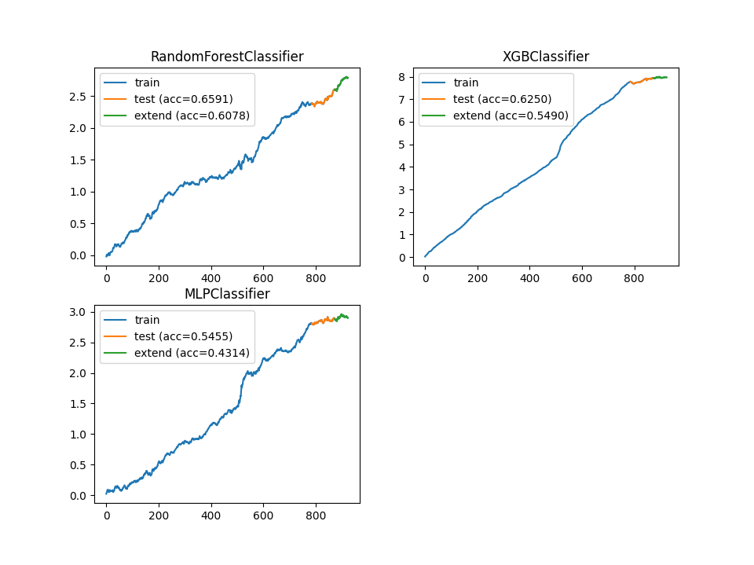
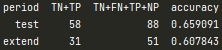
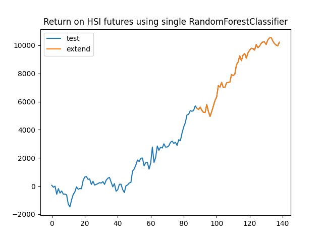
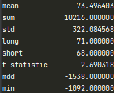

Introduction
In the last article, we discussed using HSI CBBC data to predict HSI futures close to close return, in this article we are going to extend our discussion to out-of-sample results and model stacking, starting with VotingClassifier, the following model will be LogisticRegression, RandomForestClassifier, and MLPClassifier.
Profitability is one of our metrics, in the final section we will summarize the trading performance using the model. 
Data
We will use the data in the previous article which contained 907 observations, we have added various features into our data, for those who are interested in the features engineering part please refer to this article. The extended data have 51 observations, it starts from 20210831 to 20211115.
Out-of-sample prediction accuracy
By using the model we trained in the previous article, we can simply input our extended data into the model and obtain new prediction results.
First, our RandomForestClassifier performs well, it reaches accuracy above 60% in the testing and extended period. 
Second, XGBClassifier fits the training data very well, however, it does not predict well in the extended period. 
Third, our MLPClassifier only has 50% accuracy in the extended period, it seems that it does not have prediction power. 
The following figure shows the cumulative log return on HSI futures of each model.
Model stacking
In this section, we will start with the simplest model which is VotingClassifier, it has the highest interpretability, followed by LogisticRegression, RandomForestClassifier, and MLPClassifier the model complicity will get higher but lower interpretability.
The model will be trained and validated using the test data, and pick the best model to predict extended period, the results will demonstrate below. 
Model stacking - VotingClassifier
This is the simplest model, if the majority vote for True, then the final decision will be True, no training and validating are needed. The model perform well in the testing period, it outperformed the RandomForestClassifier, however, there is no improvement in the the extended period. 
Model stacking - LogisticRegression
RandomForestClassifier is the most important input in our LogisticRegression, we also get a negative coefficient in our MLPClassifier. It fits better than VotingClassifier in the testing period, but it does not have prediction power in the extended period.
Model stacking - RandomForestClassifier
RandomForestClassifier performs well in both periods, but it still doesn't outperform a single RandomForestClassifier.
Model stacking - MLPClassifier
MLPClassifier has the same result as single RandomForestClassifier does, it seems to suggest that we better use a single RandomForestClassifier.
Model stacking - Summary
The following plot shows the cumulative log return on HSI futures. In the next section, we will discuss the trading strategy using a single RandomForestClassifier to trade HSI futures. 
Backtest results
A single RandomForestClassifier will be our final model, and we will use this model to predict the direction of HSI futures close to close return, then we will simulate the trading results and take a look at its statistic.
 The equity curve looks good in both periods, the mean profit is 73 points, it can cover the transaction cost and afford some slippages. The long-short position is balanced, it seems that the model can earn money in market up or down.
Most importantly the t-statistic of the model is 2.69 which is statistically significant, the maximum drawdown and biggest loss in one day are around 1500 and 1000 points, the slightly larger risk is inevitable in overnight trading, -3 standard deviation is common when the market is volatile, we can hedge our position by long or short other index futures.
Conclusion
In this article, we perform an out-of-sample test using extended data, RandomForestClassifier performs best, which has 60% accuracy in the extended period. In the second part of this article, we discussed model stacking using different methods, however, none of it is better than a single RandomForestClassifier. In the final section, we backtested our single RandomForestClassifier, the model is statistically significant in the out-of-sample period, we can trade HSI close to close to make some profit.